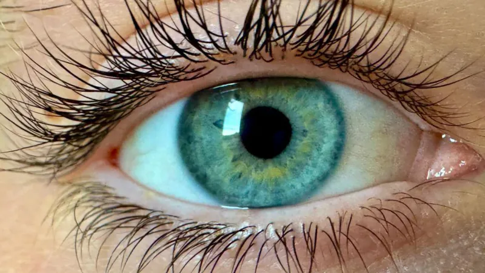
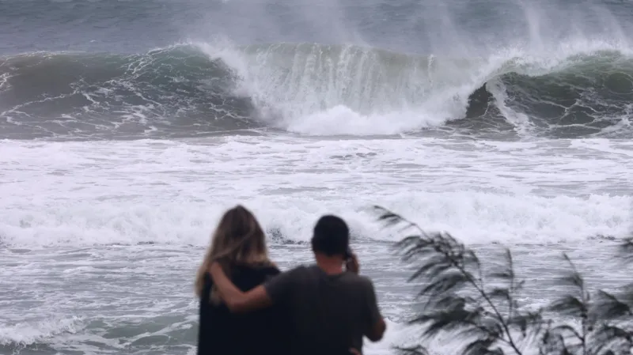

BLOG DA MILENA
-
Cientistas afirmam ter descoberto 'nova cor' que ninguém nunca viu antes
Publicado em 23 de março de 2025
Uma equipe de cientistas afirma ter descoberto uma nova cor que nenhum humano jamais viu antes. A pesquisa é resultado de um experimento no qual pesquisadores nos EUA tiveram pulsos de laser disparados em seus Ler mais...
-
Cinco mortos em ondas gigantes que atingiram a costa da Austrália
Publicado em 12 de abril de 2025
Cinco pessoas se afogaram depois que ondas enormes atingiram partes da Austrália no início do fim de semana da Páscoa. Outros dois estão desaparecidos nas costas dos estados de Nova Gales do Sul e Vitória. No sábado, o corpo de um homem foi Ler mais...
-
O que os eleitores canadenses acharam do grande debate?
Publicado em 18 de abril de 2025
A campanha eleitoral no Canadá ganhou força total, com o dia da votação a pouco mais de uma semana de distância. Os líderes dos principais partidos participaram de debates na quarta-feira (em francês) e quinta-feira (em inglês), apresentando suas visões para o futuro do país em um momento de incerteza. A BBC conversou com sete eleitores que Ler mais...